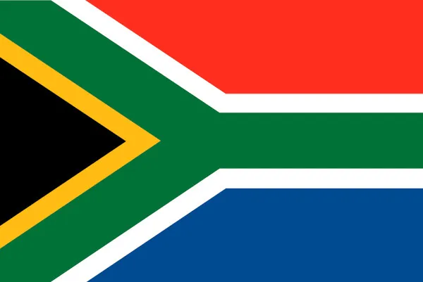

A África do Sul é um país situado na extremidade sul do continente africano e marcado por vários ecossistemas diferentes. O Parque Nacional Kruger, um destino para safári no interior do país, é repleto de animais de grande porte. A província de Cabo Ocidental tem praias, vinícolas exuberantes perto de Stellenbosch e Paarl, colinas escarpadas no Cabo da Boa Esperança, florestas e lagoas ao longo da Tuinroete (rota dos jardins) e a Cidade do Cabo, que fica ao pé da montanha da Mesa, de topo achatado.
O custo de uma viagem para a África do Sul varia muito, mas uma estimativa para 10 dias pode variar entre R$ 15.000 (econômico) e mais de R$ 20.000 por pessoa (luxo), dependendo do estilo de viagem, incluindo passagens aéreas que podem custar entre R$ 2.600 e R$ 5.000 ou mais. O valor final é influenciado pela época do ano, tipo de acomodação e atividades escolhidas, como safáris.
